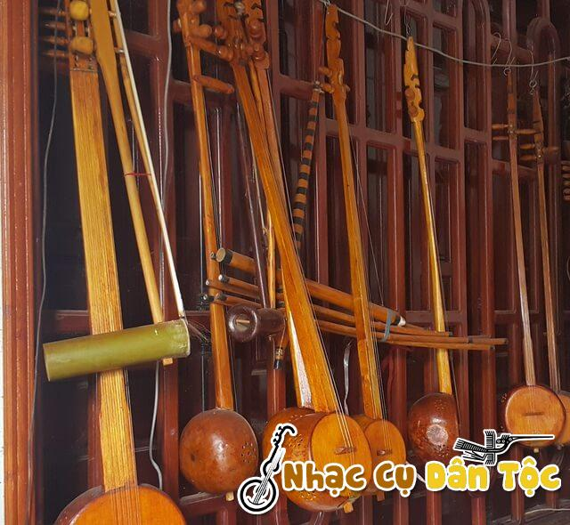
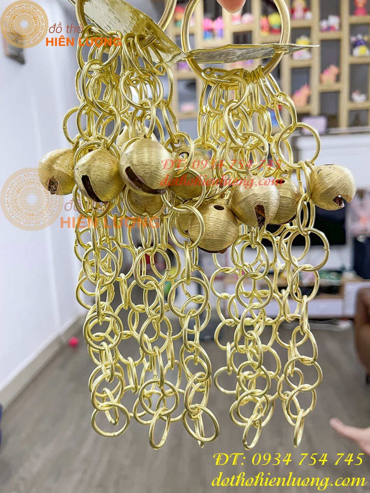
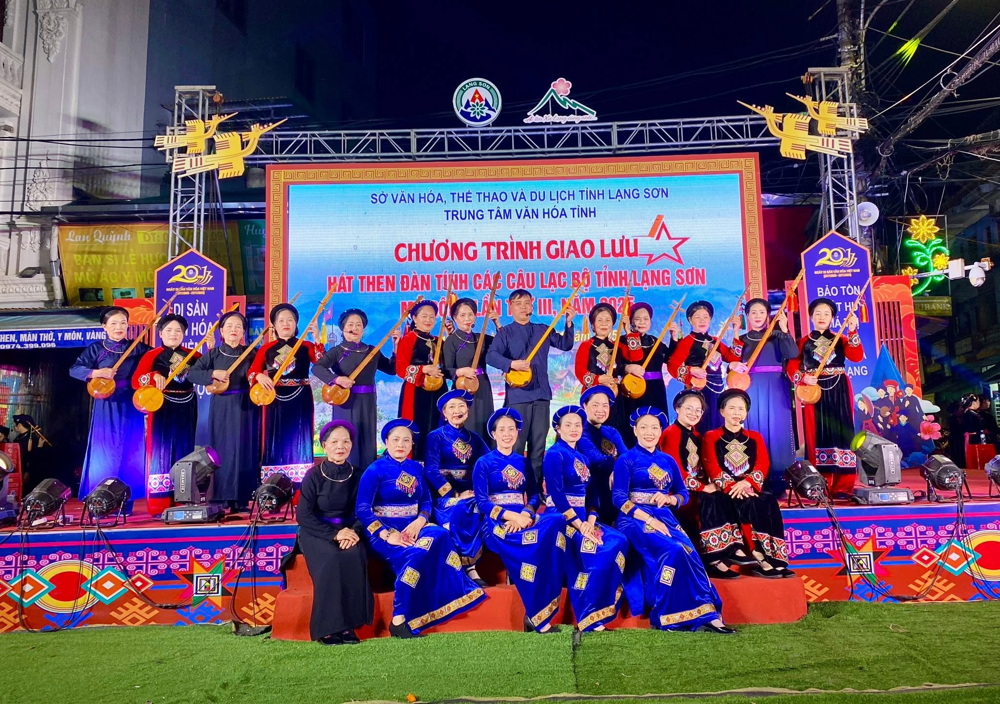

Âm Sắc Làn Điệu & Tư Liệu Di Sản Then
"Khám phá cấu tạo tinh xảo của Đàn Tính, nghệ thuật phối âm độc đáo từ Chùm Xóc Nhạc, hệ thống làn điệu đặc trưng 11 huyện thị và kho tư liệu xuất bản về nghệ thuật Then Lạng Sơn."
Phòng Nghe Âm Sắc Làn Điệu Lạng Sơn
Làn Điệu "Khảm Hải" (Trường Ca Vượt Biển)
Biểu diễn: Nghệ nhân Ưu tú Lạng Sơn • Đàn Tính & Xóc Nhạc
Cấu Tạo Nhạc Cụ & Trang Phục Hát Then

NHẠC CỤ CHÍNHĐàn Tính (Tẩu Tính)
Linh hồn âm nhạc của Then. Cần đàn làm bằng gỗ xoan dẻo mịn, bầu đàn từ nửa quả bầu khô chọn lọc, tạo nên âm sắc trong trẻo, trầm hùng.
- Bầu đàn: Quả bầu già khô, đục lỗ thoát âm
- Cần đàn: Gỗ xoan/dâu, dài từ 80 - 90cm
- Dây đàn: 2 hoặc 3 dây tơ ve vuốt mịn

NHẠC CỤ GIỮ NHỊPChùm Xóc Nhạc (Nhạc Ngựa)
Được đúc bằng đồng vàng hoặc đồng đỏ, gồm nhiều chuỗi vòng nhỏ kết nối. Khi rung tạo ra âm thanh rộn rã, mô phỏng tiếng nhạc ngựa trên đường gập ghềnh.
- Chất liệu: Đồng đỏ/đồng vàng cao cấp
- Kích thước vòng: Đường kính 1.5cm - 2cm
- Công dụng: Rung giữ nhịp tiết tấu bài hát

Y PHỤC DI SẢNTrang Phục Áo Chàm 5 Thân
Trang phục truyền thống nhuộm chàm tự nhiên của dân tộc Tày - Nùng. May kiểu 5 thân cài cúc nách phải, kết hợp dải tua vải nhiều màu sắc rực rỡ.
- Màu sắc: Xanh chàm ngả đen, gam màu nhã nhặn
- Kiểu dáng: Áo dài 5 thân cài cúc bên nách
- Phụ kiện: Khăn quấn đầu, tua vải hoa văn
Hệ Thống 3 Dạng Giai Điệu Trong Then Lạng Sơn
Giai Điệu Hát Nói (Recitative)
Dạng giai điệu gắn liền với tiếng nói tự nhiên của người Tày - Nùng. Âm thanh lên cao xuống thấp theo thanh điệu ngôn ngữ.
Giai Điệu Hát Ngâm (Chanting)
Mang tính chất dàn trải, ngậm ngùi, có nhiều nét luyến láo tinh tế. Rất phù hợp thể hiện nội tâm trút bầu tâm sự trữ tình.
Giai Điệu Tổng Hợp (Combined)
Sự kết hợp uyển chuyển giữa hát nói và hát ngâm. Cấu trúc giai điệu phát triển độc lập, phân ngắt câu rõ nét và linh hoạt.